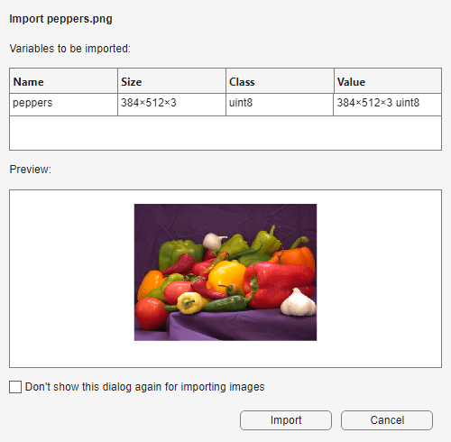
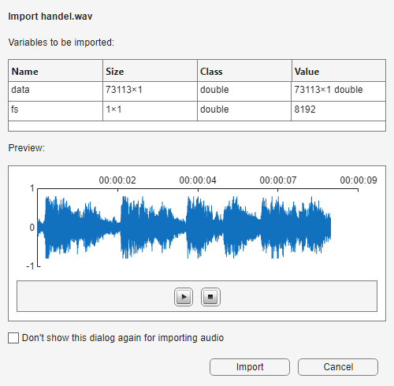
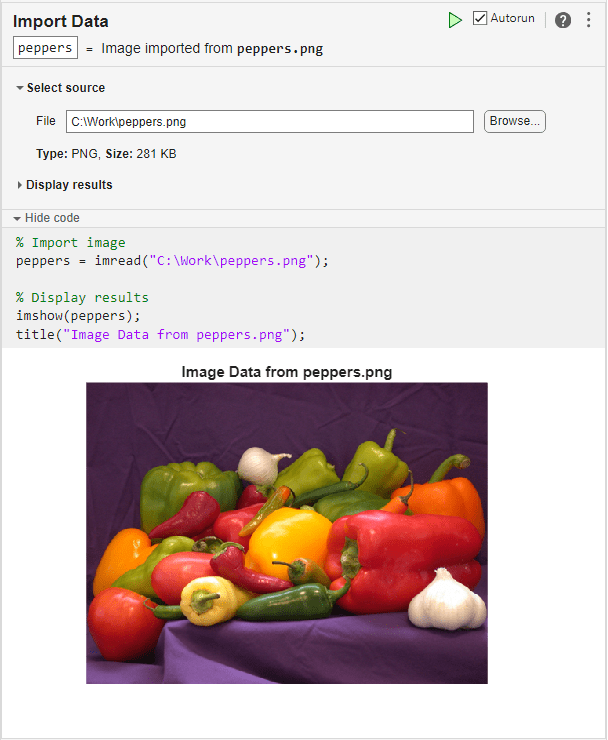

Import Images, Audio, and Video Interactively
Import data interactively into MATLAB® workspace using the Import Tool and the Import Data task.
Preview and Import File Using Import Tool
You can open the Import Tool by clicking the
Import Data button on the Home tab
or by using the uiimport function. Next, choose the
image, audio, or video file to import from the file selector. The Import Tool
displays the name, size, class, and value fields of the variables to import and a
preview. Then, to import the variables, click Import. The
variables appears in your workspace.
For example, import an image.
uiimport("peppers.png")
Import as Structure Array
You can import data into fields of a scalar structure rather than as individual
variables by specifying an output argument for the uiimport
function.
For example, import an audio file as a scalar structure.
S = uiimport("handel.wav")
You can use dot notation to access a particular field of the structure. For
example, return the value of the fs field.
value = S.fs
value =
8192Generate Reusable MATLAB Code
When you import an image, audio, or video file using the Import Tool, MATLAB automatically generates code for the import operation and returns the code in the Command Window. You can copy and modify this code to import similar files.
For example, import a video file and view the generated code in the Command Window.
uiimport("xylophone.mp4")v = VideoReader("C:\Work\xylophone.mp4");
xylophone = read(v);Import File Using Import Data Task
You can also use the Import Data Live Editor task to import data and generate code in a live script. Open the Import Data task in the Live Editor and select the source file. The task saves the image data in your workspace. To see the code that this task generates, expand the task display by clicking Show code at the bottom of the task parameter area.
For example, use the Import Data task to import an image and view the generated code.
